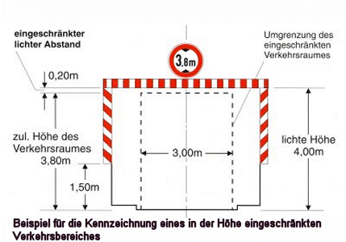

Bauliche Leitmale

Leitmale gehören zu den Verkehrseinrichtungen, sind aber keine Absperrgeräte.
Bauliche Leitmale weisen auf beschränkte Durchfahrthöhen
hin (zum Beispiel an Brückenbaustellen). Unter anderem ist
beim Einsatz von baulichen Leitmalen zu beachten:
- Leitmale sind als zusätzliche
Kennzeichnung notwendig, wenn die Durchfahrthöhe weniger
als 4,50 m beträgt.
- Leitmale sind mit rot-weiß
retroreflektierenden Folien versehen.
- Leitmale haben eine Höhe
von mindestens 250 mm.
- An den senkrechten Bauteilen
weisen die Schraffen der Leitmale unter 45° zum Verkehrsbereich
hin.